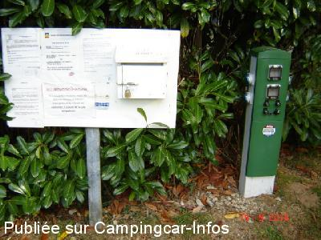
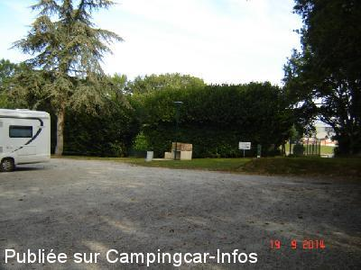
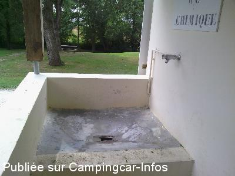
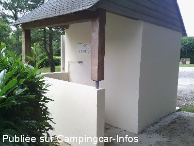
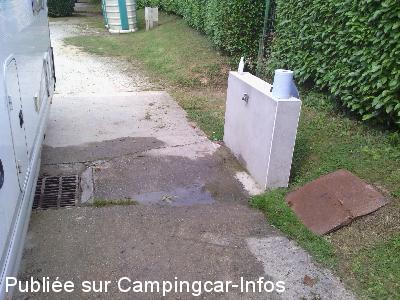
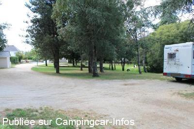

ASN = Aire de services avec stationnement nuit possible de :
LOCQUELTAS
(N° 769)
Accès/adresse :
Rue de la Fontaine
56390 LOCQUELTAS
56390 LOCQUELTAS
Latitude : (Nord) 47.75837° Décimaux ou 47° 45′ 30′′
Longitude : (Ouest) -2.76907° Décimaux ou -2° 46′ 8′′
Tarif : 2012
Stationnement gratuit
Services : 3,50 €
Services :


Tous commerces
Autres informations :
Aire ouverte toute l'année
Tel : +33(0)297 666 015

Le 29/12/2014 par PC

Le 29/12/2014 par PC

Le 01/08/2014 par Pelot

Le 01/08/2014 par Pelot

Le 01/08/2014 par Pelot

Le 27/08/2010 par Claire-Cerise
de
Pelot
le 30/07/2014 :
Aire agréable.
Robinet à poussoir avec filetage pour remplissage. Vidange WC peu pratique.
Tables pique nique, barbecue.
Aire agréable.
Robinet à poussoir avec filetage pour remplissage. Vidange WC peu pratique.
Tables pique nique, barbecue.
de
will
le 10/10/2012 :
§
de passage septembre 2012
compliments completement exagéré . arrivé un jour de pluie difficultés pour se garer. je me suis demandé si je pourrais ressortir . endroit agréable. services:WC hs .tuyau en permanence pour le remplissage d'eau pas hygienique.pour la vidange eaux usée impossible de se mettre sur le trou donc vidange à coté.vidange cassette pas adaptée.mais cette aire à l'avantage d'etre gratuite et d'exister electricité 3.50 les 24H
§
de passage septembre 2012
compliments completement exagéré . arrivé un jour de pluie difficultés pour se garer. je me suis demandé si je pourrais ressortir . endroit agréable. services:WC hs .tuyau en permanence pour le remplissage d'eau pas hygienique.pour la vidange eaux usée impossible de se mettre sur le trou donc vidange à coté.vidange cassette pas adaptée.mais cette aire à l'avantage d'etre gratuite et d'exister electricité 3.50 les 24H
de
Quidam
le 11/06/2011 :
Merci à Alain E....un ami camping cariste et ancien maire de la commune d' avoir mis à notre disposition cette aire. De passage le 9 Juin nous y avons fait étape dans un endroit verdoyant, calme avec des services à rendre jaloux les maires des communes du littoral.
Merci Alain. Christian.
Merci à Alain E....un ami camping cariste et ancien maire de la commune d' avoir mis à notre disposition cette aire. De passage le 9 Juin nous y avons fait étape dans un endroit verdoyant, calme avec des services à rendre jaloux les maires des communes du littoral.
Merci Alain. Christian.
de
C. Le Bihan
le 27/08/2010 :
Un petit bonjour pour témoigner que l'aire de services est très agréable. Merci à Monsieur Le Maire que nous avons rencontré sur place et qui en tant que CCariste connait bien le problème de stationnement ! Nous faisons de la pub sur notre blog et espérons par ce biais faire connaître cette aire à de nombreux CCaristes ! Un grand merci donc pour cet investissement car il est rare de trouver des aires pour CC aussi confortable ! A bientôt sûrement !
http://cclebaluchon.over-blog.com/article-128-1-aire-de-services-exemplaire-merci-monsieur-le-maire-56049113.html
Un petit bonjour pour témoigner que l'aire de services est très agréable. Merci à Monsieur Le Maire que nous avons rencontré sur place et qui en tant que CCariste connait bien le problème de stationnement ! Nous faisons de la pub sur notre blog et espérons par ce biais faire connaître cette aire à de nombreux CCaristes ! Un grand merci donc pour cet investissement car il est rare de trouver des aires pour CC aussi confortable ! A bientôt sûrement !
http://cclebaluchon.over-blog.com/article-128-1-aire-de-services-exemplaire-merci-monsieur-le-maire-56049113.html
de
lopat
le 05/09/2007 :
Aire très agréable et très calme à 2 minutes des petits commerces très accueillants (bar)... Bonne idée du barbecue géant! Merci aussi pour le panneau d'accueil avec plein de numéros d'urgence : médecin... ainsi que leurs adresses et plan de ville. Encore bravo!
Aire très agréable et très calme à 2 minutes des petits commerces très accueillants (bar)... Bonne idée du barbecue géant! Merci aussi pour le panneau d'accueil avec plein de numéros d'urgence : médecin... ainsi que leurs adresses et plan de ville. Encore bravo!
de
Alain EVENO maire de Locqueltas
le 08/12/2006 :
La volonté de la municipalité de LOCQUELTAS est depuis plus de 15 ans d'accueillir nos Amis camping-caristes dans les meilleures conditions, à 12 Km du Golfe du Morbihan n'hésitez pas à venir découvrir une commune rurale ou il fait bon vivre.
Alain EVENO
Maire de Locqueltas et camping-cariste de longue date.
La volonté de la municipalité de LOCQUELTAS est depuis plus de 15 ans d'accueillir nos Amis camping-caristes dans les meilleures conditions, à 12 Km du Golfe du Morbihan n'hésitez pas à venir découvrir une commune rurale ou il fait bon vivre.
Alain EVENO
Maire de Locqueltas et camping-cariste de longue date.
de
RENIER Michel . Beauvechain. BELGIQUE
le 08/12/2006 :
Oui monsieur le maire, je vous fais la promesse de venir dans votre charmande commune, cela fait plaisir
qu'un maire francais nous accueille. Bien à vous et merci Monsieur le Maire.
Oui monsieur le maire, je vous fais la promesse de venir dans votre charmande commune, cela fait plaisir
qu'un maire francais nous accueille. Bien à vous et merci Monsieur le Maire.
de
grenet
le 20/11/2006 :
Bravo à la municipalité... Une aire comme on aimerait en trouver souvent... C'est avec plaisir que nous avons fait quelques courses chez vos commercants.
Bravo à la municipalité... Une aire comme on aimerait en trouver souvent... C'est avec plaisir que nous avons fait quelques courses chez vos commercants.
de
dominique et philippe
le 18/05/2006 :
Aire très agréable. Pour l'électricité, demander la clef dans un café-tabac dans le bourg (300-400 mètres). Un peu "patouillou" par temps de pluie.
Aire très agréable. Pour l'électricité, demander la clef dans un café-tabac dans le bourg (300-400 mètres). Un peu "patouillou" par temps de pluie.
de
Jacques &Josiane(22)
le 14/06/2005 :
Très agréable en effet, mais la vidange wWC pas facile.
Très agréable en effet, mais la vidange wWC pas facile.